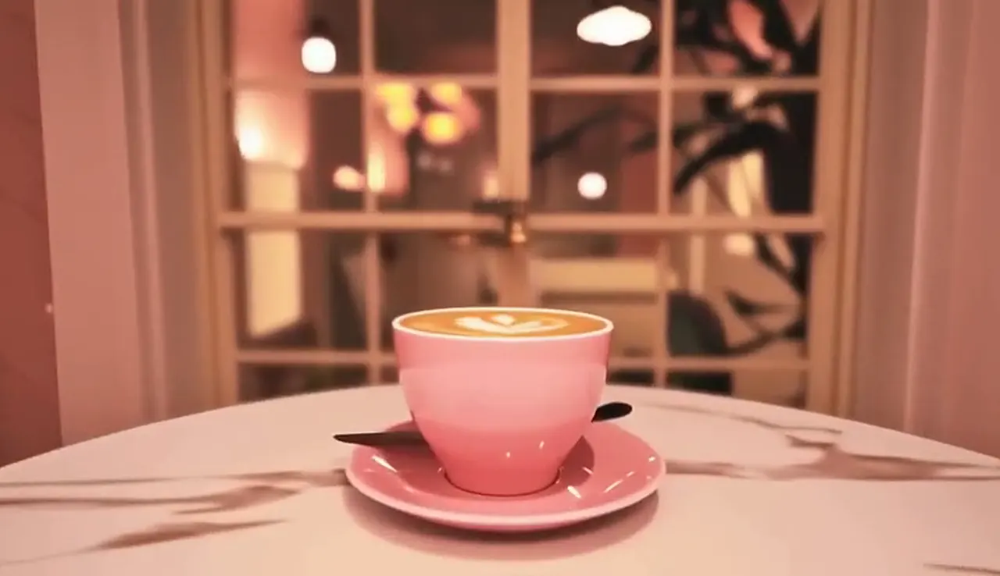

Our story
Friends first, coffee second.
Amigos means friends
We wanted a place where nobody eats alone unless they want to.
The quiet corner
Books to borrow, beans roasting in the corner.
Take a book, leave a book. The little roaster runs every Tuesday and the whole street smells of it.
How it started
In 2019, three college friends rented a tiny pink room that used to be a tailor's shop. We painted it ourselves, borrowed chairs from our parents and bought one very expensive espresso machine.
The first month we served eleven people a day. Most of them were friends. Then the friends brought friends, the window table got famous on Instagram and we started baking at six in the morning to keep up. Seven years later we have a roaster in the back, a little garden out back and the same mismatched chairs.
Seven pink years.
2019
The pink room opens
Six tables, one machine, eleven cups on day one.
2021
We start roasting
A small roaster in the back for our house blend.
2023
The garden opens
Fairy lights, bougainvillea and twelve more seats.
Today
Forty eight seats
Still baking at six. Still the same chairs.

What we care about
Good coffee, fairly bought
Our beans come from two family estates in Chikmagalur. We pay above market and visit every harvest.
Nothing goes to waste
Bakes left at closing go to a local shelter every night. Coffee grounds go to the community garden next door.
Everyone is welcome
Wheelchair friendly entrance, a quiet corner with no music, and a pay-it-forward board for anyone who needs a coffee.
The amigos.
Saksham Sinha
Co-founder, head barista
Invented the rose latte by accident on a Tuesday. Has not stopped talking about it since.
Kabir Mehta
Co-founder, roaster
Spends his mornings with the roaster and his evenings explaining the difference between washed and natural.
Sana Qureshi
Co-founder, pastry
Up at five, baking at six. The shortcake recipe is her grandmother's and she will not share it.